Information complémentaire
Contenu
Information complémentaire¶
Dans cette partie du site je vais vous explique comment mettre à jour le site / rajouter du contenu. En parallèle je vais vous donner plusieur d’informations concernant les pannes que vous pourrez rencontrer et le fonctionnement du réseau de l’école. je vais aussi vous expliquer le fonctionnement de l’usi, la dgnsi, la dgep, la dgo et les outils qui sont à notre disposition.
Mettre a jour et modifier le site¶
Tout d’abord il faut que vous puissiez ouvrir les fichiers sur un logiciel de code (j’utiliser visual studio) ensuite il faut que vous vous rendiez dans le finder, Dans le dossier “src” du site. c’est dans ce dossier que vous allez soit modifier des fichiers existant soit en rajouter. pour le modifier il suffit d’ouvrir un fichier qui existe déjà et de le modifier.
Note
Pour faire des captures d’écran il faut appuyer sur : commande, MAJ, 4
si vous voulez utiliser des images il faut les mettre dans le dossier image
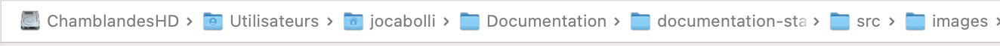{kind=link}
Pour rajouter un fichier c’est un peut plus compliquer. il faut ouvrir le fichier “_toc.yml” et une fois dedans vous pouvez ajouter une section ou une sous-section. Dans tous les cas si vous rajoutez quoique ce soit dans ce fichier il faudra aussi créé un fichier dans le dossier “src” avec le même nom.
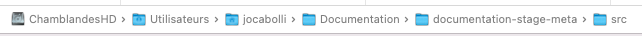
{kind=link}
EX : pour créer cette page j’ai dû rajouter dans le fichier “_toc.yml” un file du nom de “InformationComplementaire” donc dans le dossier “src” j’ai dû créer un fichier du même nom.
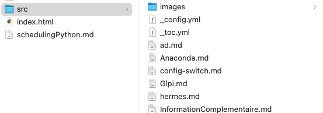
{kind=link}
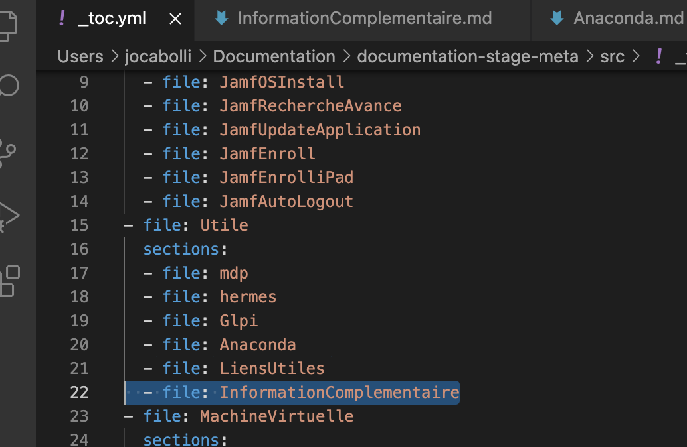
{kind=link}
pour appliquer votre modification il faut exécuter dans le terminal une suite de commandes. Pour ce faire aller dans la barre en haut quand vous êtes sur le fichier que vous voulez modifier puis cliquer sur terminal :
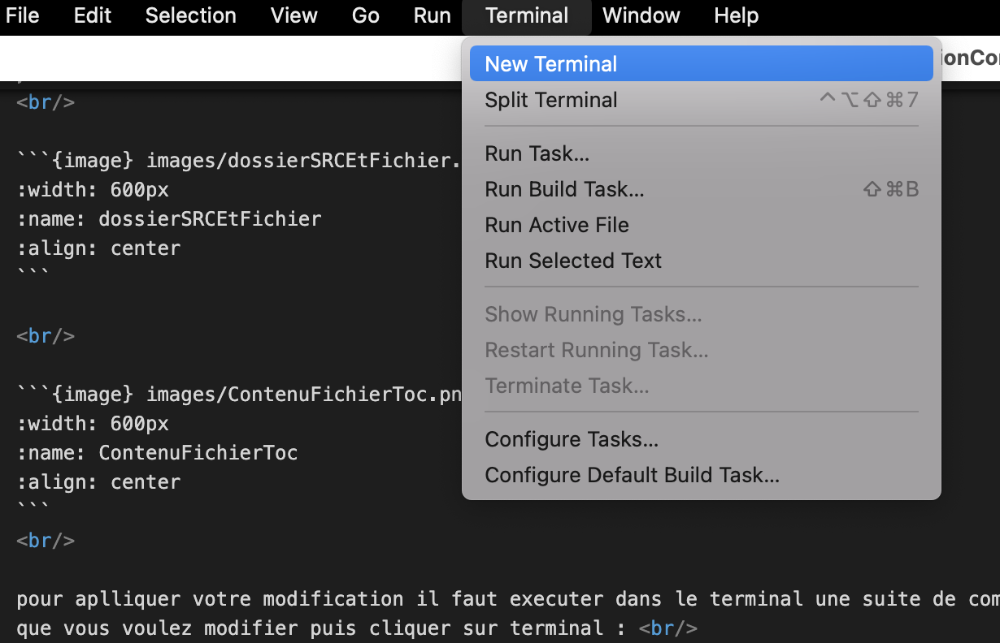
{kind=link}
Ensuite en bas de votre page il devrait y avoir une nouvelle “fenêtre incruster dans votre fenêtre”.
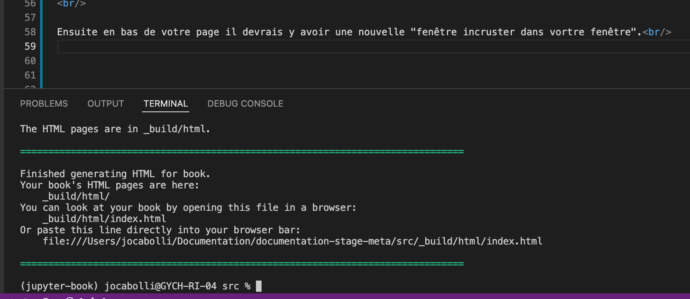
{kind=link}
une fois votre modification faite il faut aller sur le terminal et taper la commande :
conda activate jupyter-book
Note
Cette commande doit être tapée uniquement si vous n’êtes pas déjà sur l’environnement jupyter-book. dans le terminal s’est marqué entre des parenthèses (base) ou (jupyter-book).
ex (ici je suis déjà sur jupyter-book):
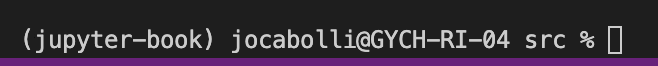
{kind=link}
Attention
pour que la commande fonctionne il faut que vous soyez dans le bon dossier (celui du site).
donc si vous ne savez pas ou vous êtes, taper dans le terminal :
pwd
Cela vous indique où vous vous trouvez. ensuite pour vous placer au bon endroit (si vous n’êtes pas au bon endroit) il vous suffit de taper “cd” et de glisser le dossier dans lequel vous voulez vous trouver dans le terminal.
Maintenant que vous êtes dans le bon dossier et que vous êtes sur le bon environement (jupyter-book) vous pouvez taper la commande suivante :
Jupyter-book build .
Voilà ! une fois que tout ça et faits vous pouvez voir le changement en local mais pas en ligne. Des modifications que vous avez apportées au fichier.
Note
il suffit de copier le lien qui vous est fourni quand vous tapez la commande build .
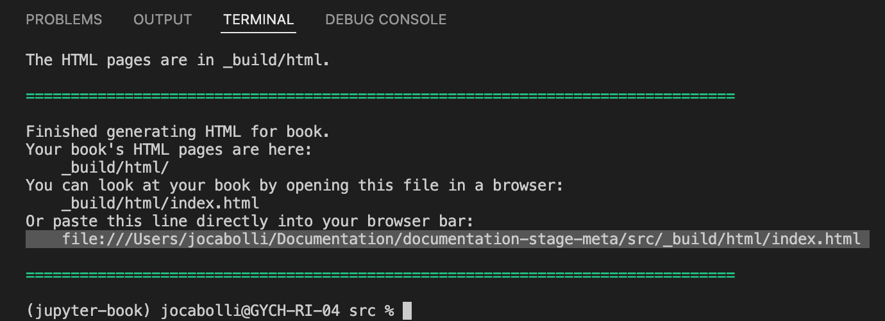
{kind=link}
Si vous voulez pouvoir voir vos modifictions en ligne il faut aller sur gitHub desktop pour push toutes les données que vous avez modifiées. Mais avant ça il faut sélectionner le bon dossier.
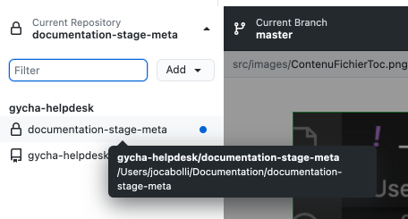
{kind=link}
Une fois que vous êtes sur le bon dossier il faut faire un commmit à la branche principale.
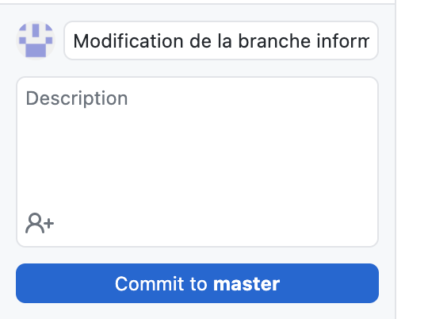
{kind=link}
une fois que c’est faits il faut cliquer sur push en haut à droite.
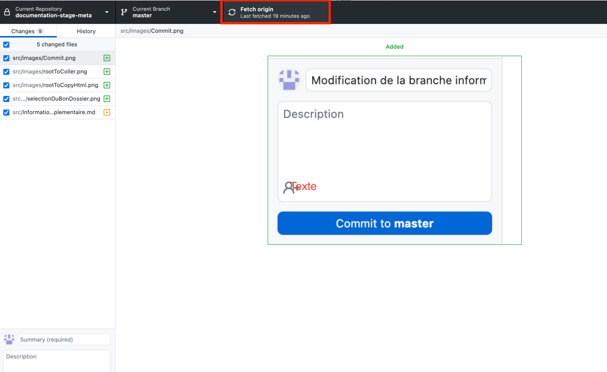
{kind=link}
Ensuite vous sélectionnez le deuxième dossier est vous faites la même chose. Une fois que c’est fait vous aller dans le finder et vous aller sur le dossier “src > build > html” et vous copier l’intégralité du dossier.
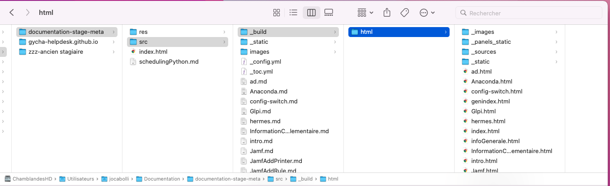
{kind=link}
ensuite vous allez sur le dossier (gycha-helpdesk.github.io) est vous coller le tout dans le dossier 9adef59……
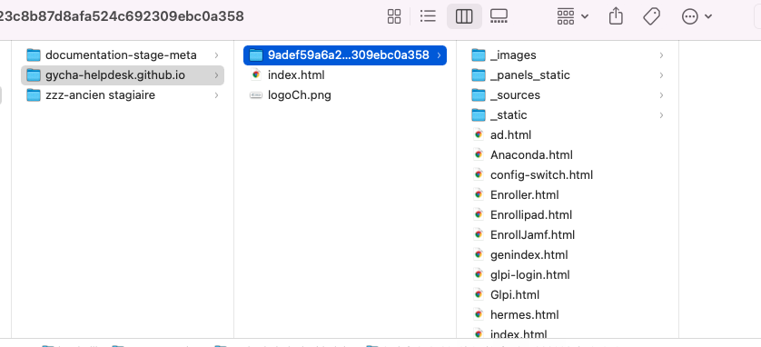
{kind=link}
si ça ne marche pas refaites-le. Mais en général il faut juste attendre un peu et recharger la page.
commande qui pourrais vous être utile¶
Pour exécuter une commande jamf il suffit de connecter n’importe quel ordinateur sur le réseau de l’école par câble et se rendre dans le terminal. Cette commande sert à activer toutes les règles que n’importe quel ordinateur peut recevoir.
Attention
Pour que la commande fonctionne correctement il faut l’éxécuter plusieurs fois. Parce que il y a beaucoup de règles qui sont éxécutées en même temps est certaine règle dépendent d’autres règle. Du coup il est possible que l’exécuter une seule fois ne suffise pas.
sudo jamf policy
si vous voulez apeller un règle précisement :
sudo jamf policy -event NomDeLaRegle
Attention
il ne faut pas tapez exactement le nom de la regle. Il faut taper l’événement personnalisé de la règle (l’encadré en vert). (En général c’est le nom de la règle). Pour vérifier si le nom de la règle est celui de son événement personnalisé sont les mêmes il suffit de cliquer sur la règle.
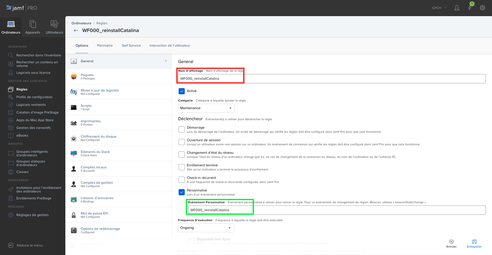
{kind=link}
Ordinateur de prêt¶
Pour configurer un ordinateur a prêté il faut commencer en lui installant l’OS qu’il supporte (Catalina pour 2012 et Big Sur pour 2014). Sur ce site il y a toutes les informations et version. De macOS High Sierra jusqu’à macos Big Sur. Ensuite il faut vérifier que l’rodinateur n’a pas plusieurs disks. Si c’est le cas il faut aller dans “utilitaire de disques” et supprimer ceux en trop et en garder un seul (chamblandesHD).
{kind=link}
Puis appliquer les règles de jamf (soudo Jamf policy). Il faut vérifier que dans les applications l’ordinateur a bien Outlook, Teams, Word, etc. Une fois que vous avez faits toutes ces étapes il ne reste plus qu’a créé un compte admin (user : adminl et Mdp : Gym _09). Il ne faut pas oublier son compte (un compte utilisateur) et modifier dans les teams le fichier invantaire en classifiant l’ordinateur par rapport a son nom.
Shéma réseau des salles de classe en général¶
VLAN :
34 = serveur.
48 - 49 = ordinateur personel.
40 = Poste de l’école.
38 = Imprimante
32 = materiel infra (switch, etc)
voici les switchs réseau que vous retrouverez dans toutes les salles de classe.
Note
Le port 1 est pour internet, le port 2 pour le mac mini (le Pc fixe), le port 3 le beamer, le port 8 c’est pour les ordinateurs personnels des profs.
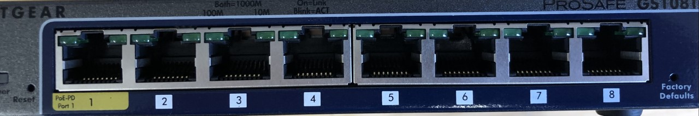
{kind=link}
Comme on peut le voir à l’arrière il n’y a que l’alimentation.
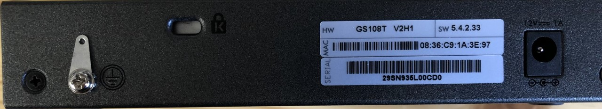{kind=link}
Note
Normalement a l’avant il y a juste le bouton power et input, le bouton input change quel câble hdmi sera affiché au beamer. Comme on peut le voir sur l’in 1 ça sera la Wacom donc l’ordinateur fixe (le mac mini). In 2 ordis perso donc l’rodinateur que le prof amène ou les élèves. In 3 c’est pour la caméra qui est dans la salle.
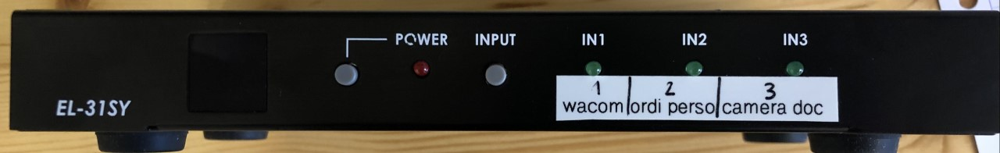
{kind=link}
Note
Le port HDMI “output” c’est le câble HDMI qui relie le beamer (il sert de sortie pour toutes les autres entrées hdmi), l’in 3 est relié à la caméra, l’in 2 à l’rodi perso, et l’in 1 au mac mini.
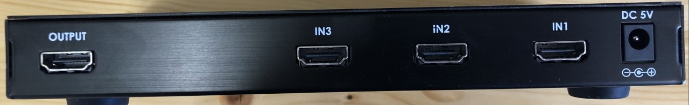
{kind=link}
Note
Sur le Mac mini ce n’est pas compliqué même s’il en donne l’impression. Tout à gauche c’est l’alim du mac mini, ensuite c’est le câble réseau donc internet (sur la photo c’est le câble rouge). Après tout le reste est relié ensemble jusqu’au même câble. Sur ce même câble il y a le câble HDMI du mac mini, un câble USB(il sert à relier les ports USB de la Wacom au mac mini s’il y en a) et pour finir l’alim de la Wacom est tous ces câbles est réuni en un seul est il est connecter a la wacom.
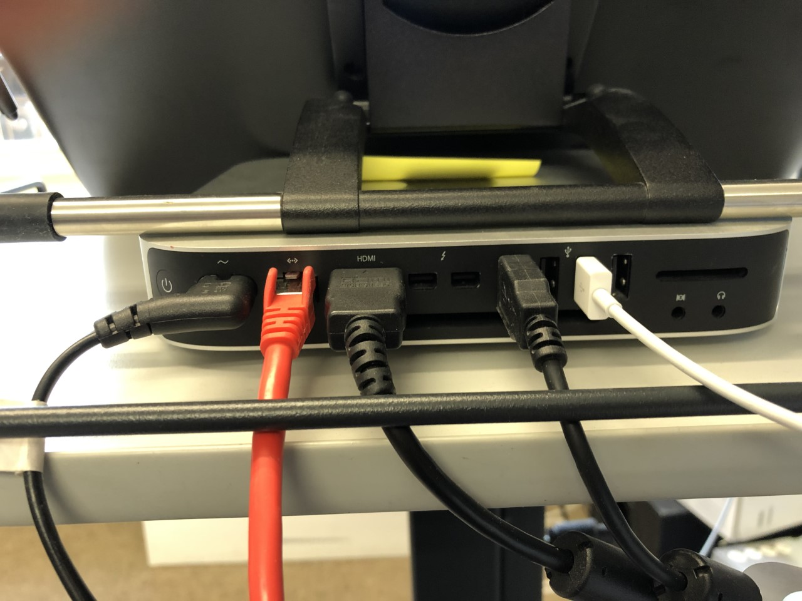
{kind=link}
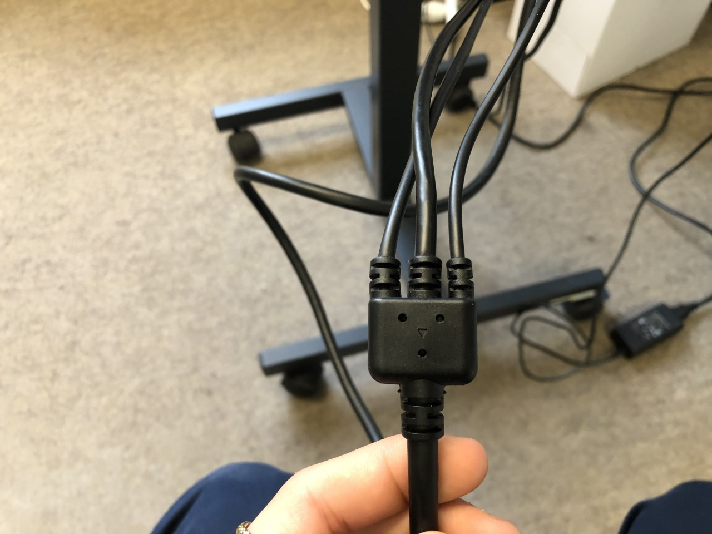
{kind=link}
Fonction / shéma de l’usi / dgep / dgnsi¶
Pour gérer le support des écoles post obligatoires ils ont créé un système en suivant le modèle d’ITIL.
Donc pour commencer toutes les écoles ont un helpdesk (le niveau 1) si les commandes dépassent notre compréhension ou si elle dépasse notre domaine d’action. Le niveau 2 c’est l’usi, le niveau 3 c’est les ingénieurs qui sont aussi a l’usi mais c’est une autre partie et pour finir il y a le niveau 4 c’est le fournisseur des applications ou des services.
Note
Sur le schéma on peut constater qu’une personne exécute plusieurs fonctions en même temps, Symplement c’est le chef de l’usi donc il a plusieurs postes.
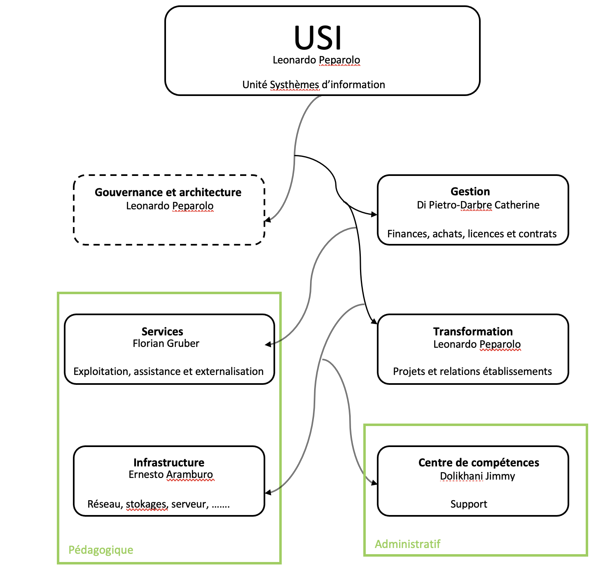
{kind=link}
Note
L’usi peut aussi accéder au serveur Sql et y exécuter des commandes.
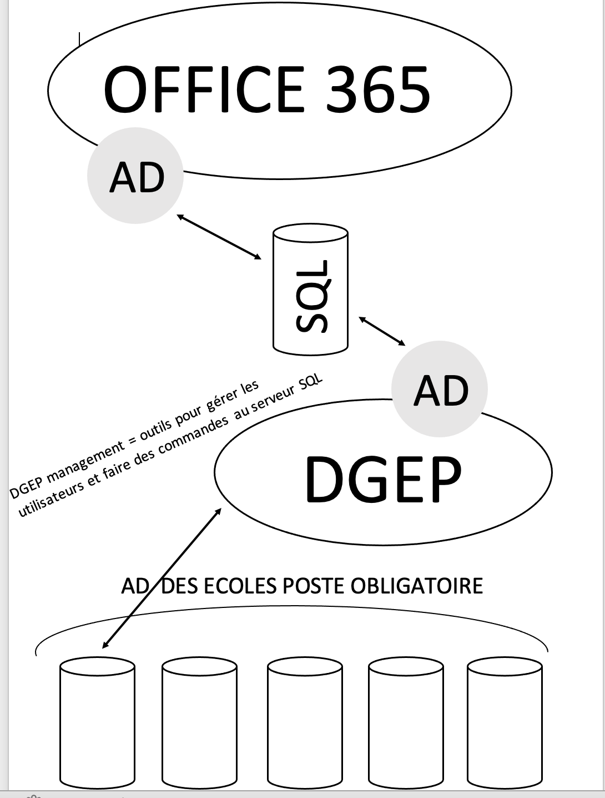
{kind=link}
Information supplémentaire¶
kahoot¶
Sur kahoot il est possible de lancer en boucle un quiz. Pour ce faire il faut accéder à la bibliothèque ou son organiser tous vos quiz. ensuite cliquer sur jouer (sélectionner le quiz que vous voulez lancer en boucle).
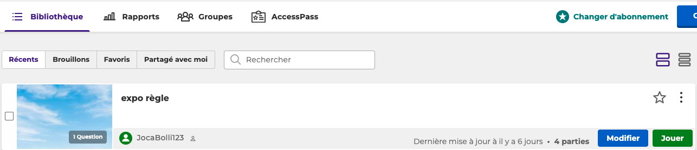
{kind=link}
Ensuite une pop-up s’affichera avec deux modes de jeu, choisissez celui de gauche.
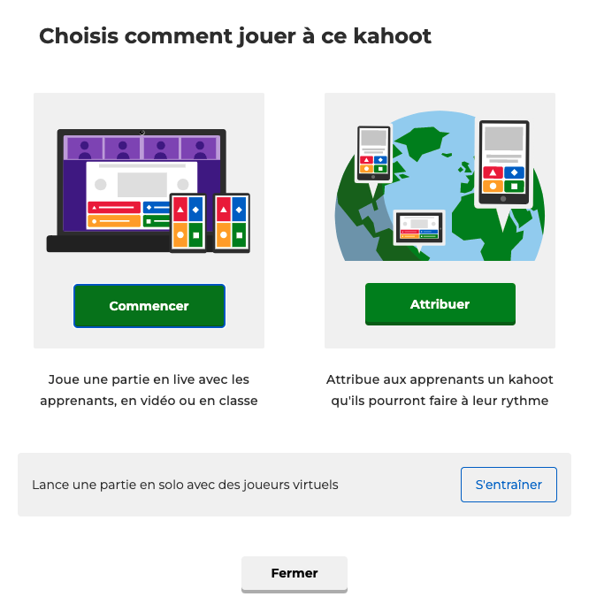
{kind=link}
Une fois le mode de jeux choisi il faut aller dans les option pour les afficher en selectionner passet automatiquement les questions des questions.
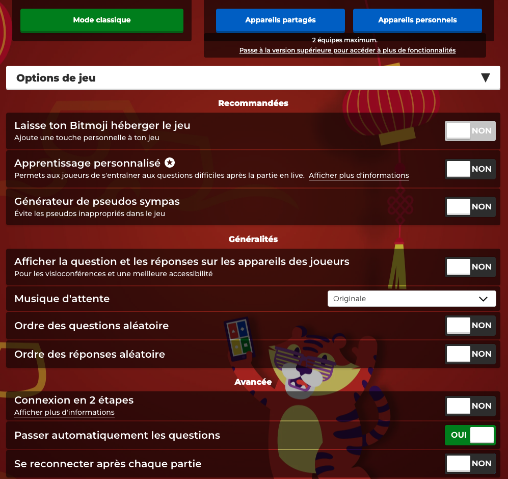
{kind=link}
VMware / Vsphere¶
Comment ce connecter a Vsphere
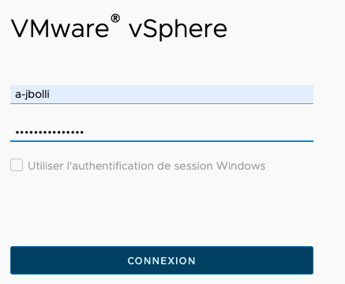
{kind=link}
Sur Vsphere il y a une notation un peu spécial vous pourrez la retrouver ici :
DUS = DC (Domain controler)
NGE = Netwotk (DHCP, NPS, FFSO)
PGE = Printer (papercut)
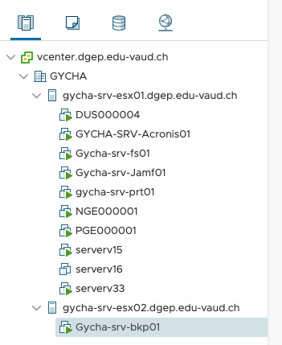
{kind=link}
Site de vente / achat et imprimante¶
L’ancien nom du site de “vente, achat” de matériel pour les établissements post obligatoire s’appelait “le Dol”. Maintenant ils ont changé pour “la place”.
Note
Les écoles post obligatoire ont des rabais immenses sur les licences, le matériel etc. (chez Dell ça peut aller jusqu’à du 60% voir plus). Ils ont des licences office pouvant aller jusqu’à 5.- par personne.
Pour dépanner les imprimantes en général c’est parce que la personne a mal tapé son mot de passe du coup il faut réafficher le pop-up et pour ça il faut soit relancer une impression soit cliquer en bas à gauche de l’écrant ensuite il faut cliquer sur la petite flèche et normalement ça réaffichera le pop-up.
Problème d’affichage quand on créé une section sur le site¶
Quand on créé une section pour la première fois si vous ne voulez pas qu’il y ai un problème d’affichage.
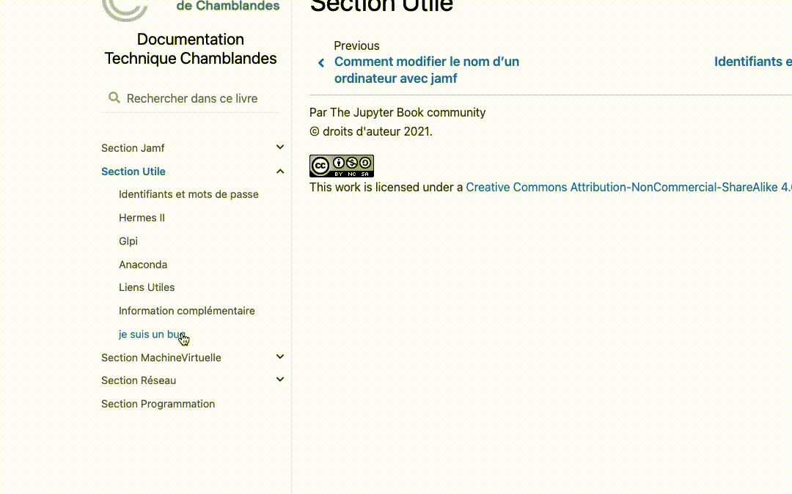
{kind=link}
Note
Pour pouvoir mettre un gif sur le site j’ai utiliser un site de conversion de fichier .mov en .gif (les fichiers .mov c’est les fichier quand tu fais une vidéo de ton écran). Ensuite tu les place dans le dossier images du site et voilà
il faut impérativement executer la commande suivante si vous voulez régler le problème :
jupyter-book clean .
Attention
pour que la commande fonctionne il faut que vous soyez dans le bon dossier (celui du site). Au même endroit que pour rexecuter la commande jupyter-book build .
Attention
Ensuite il faut absolument executer la commande :
jupyter-book build .